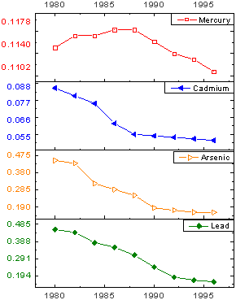
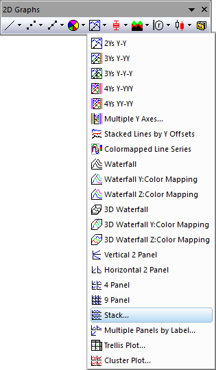
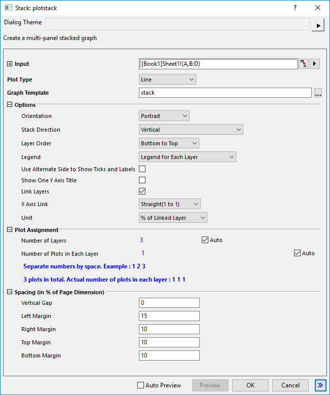
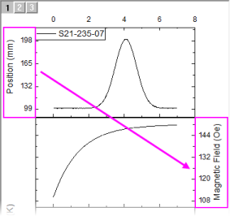

Stapeldiagramm
Stack-Graph
- 
Datenanforderungen
Wählen Sie mindestens eine Y-Spalte aus (oder einen Bereich aus mindestens einer Y-Spalte). Idealerweise wählen Sie mindestens zwei Y-Spalten aus (oder einen Bereich aus mindestens zwei Y-Spalten). Wenn es eine verbundene X-Spalte gibt, stellt die X-Spalte die X-Werte bereit; ansonsten wird ein Abtastintervall der Y-Spalte oder Zeilennummer verwendet.
Diagramm erstellen
Wählen Sie die gewünschten Daten aus.
Wählen Sie .
oder
Klicken Sie auf die Schaltfläche Gestapelt in der Symbolleiste 2D Grafiken.
- 
Origin öffnet den Dialog plotstack.
- 
Passen Sie die Optionen im Dialog benutzerdefiniert an und klicken Sie dann auf OK, um das Diagramm zu erstellen.
Vorlage
STACK.OTP (im Origin-Programmordner installiert)
Notizen
- Die X-Funktion plotstack wird beim Zeichnen dieses gestapelten Diagramms verwendet.
- Diagrammlayer werden vertikal oder horizontal mit der Option Stapelrichtung gestapelt.
- Bitte beachten Sie, dass es zum horizontalen Stapeln der Layer zwei Optionen gibt: Horizontal (XY-Achsen ausgetauscht) und Horizontal. Mit ihnen können Sie entscheiden, ob die X- und Y-Achsen während des Stapelns der Layer ausgetauscht werden sollen. Die Option Horizontal funktioniert gut mit der Ausrichtung = Querformat.
- Wenn die Auswahl der Arbeitsblattdaten eine einzelne X-Spalte einschließt, wird jede Y-Spalte standardmäßig in ihren eigenen Layer gezeichnet. Alternativ erweitern Sie die Diagrammzuordnung, deaktivieren die Kontrollkästchen Auto und legen Sie die Anzahl der Layer und die Anzahl der Diagramme in jedem Layer fest (geben Sie eine mit Leerzeichen getrennte Liste ein).
- Wenn die Auswahl der Arbeitsblattdaten mehrere X-Spalten einschließt, ist die Anzahl der Layer gleich die Anzahl der X-Spalten, und jede Y-Spalte wird standardmäßig gegen die nächste X-Spalte gezeichnet. Wie in dem Fall, in dem Ihnen eine einzelne X-Spalte vorliegt, können Sie die Kontrollkästchen Auto deaktivieren und Ihre eigene Layer- und Diagrammkonfiguration festlegen. Dieser Typ von Diagramm unterstützt nicht den Fall, dass die Anzahl der X-Spalten größer ist als die Anzahl der Layer.
- Arbeitsblattdaten werden gezeichnet -- angefangen bei der am weitesten links befindlichen Spalte im Arbeitsblatt und nach rechts gehend -- von unten nach oben, mit Layer1 ganz unten, Layer2 darüber etc.
- Die X-Achse in jedem Unterlayer hat eine Verknüpfung Gerade (1 zu 1) mit der X-Achse in Layer1.
- Die Achsentitel zeigen die zugehörigen Spaltennamen des Arbeitsblatts an. Wenn die Stapelrichtung Vertikal oder Horizontal (XY-Achsen ausgetauscht) ist, können Sie Einen Y-Achsentitel zeigen aktivieren, um nur einen Y-Achsentitel zu zeigen. Wenn für die Stapelrichtung Horizontal angegeben ist, kann das Kontrollkästchen Einen X-Achsentitel zeigen aktiviert werden, um nur einen X-Achsentitel zu zeigen.
- Mit dem Kontrollkästchen Alternative Seite zum Zeigen von Hilfsstrichen und Beschriftungen verwenden kann die Position der Hilfsstrichsbeschriftungen für jeden Layer abwechselnd angezeigt werden (verfügbar für jede Stapelrichtung -- nicht nur vertikal).
- 
- Wenn die Stapelrichtung Vertikal und der Vertikale Abstand kleiner als oder gleich 2 ist, zeigt Origin die X-Achse nur für den ersten Layer. Wenn die Stapelrichtung Horizontal oder Horizontal (XY-Achsen ausgetauscht) ist und der Horizontale Abstand kleiner als oder gleich 2 ist, zeigt Origin die vertikale Achse nur für den ersten Layer.